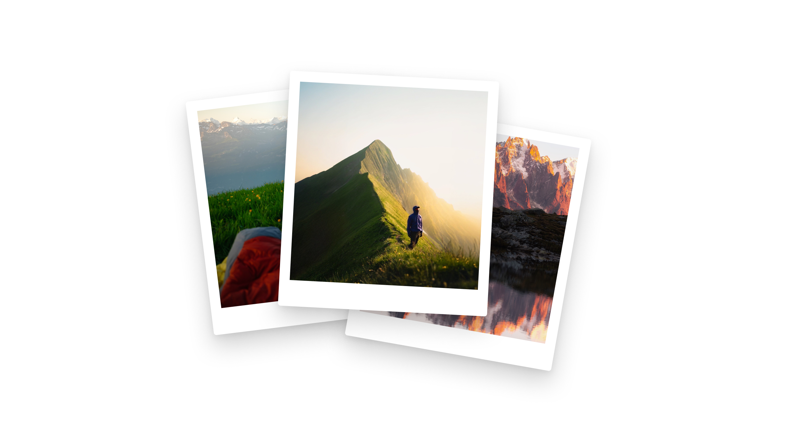

You're in.
Your guide is ready right now.
Preparing download... Open in Google DriveA copy is also on its way to your email.
Hey, Leon here.
The 100+ spots in this guide took me 5 years to put together. Now they're yours.
If you have a question or want to send me a photo from your trip: just hit reply on the receipt email or hit me up on Instagram at @leon.helg.
Open the list on Google Maps
All 122 pins live in your Maps app, ready for offline.
What's next
- If you opened this page from Instagram, TikTok or Facebook: tap the menu at the top right and pick Open in Safari (iPhone) or Open in Chrome (Android). In-app browsers block the download.
- Save the PDF to your phone for offline use on the trail. On iPhone: download → share → "Save to Files".
- Save the Google Maps list above so all 122 pins live in your existing Maps app.
- Pick a region you haven't been to yet. Start there.